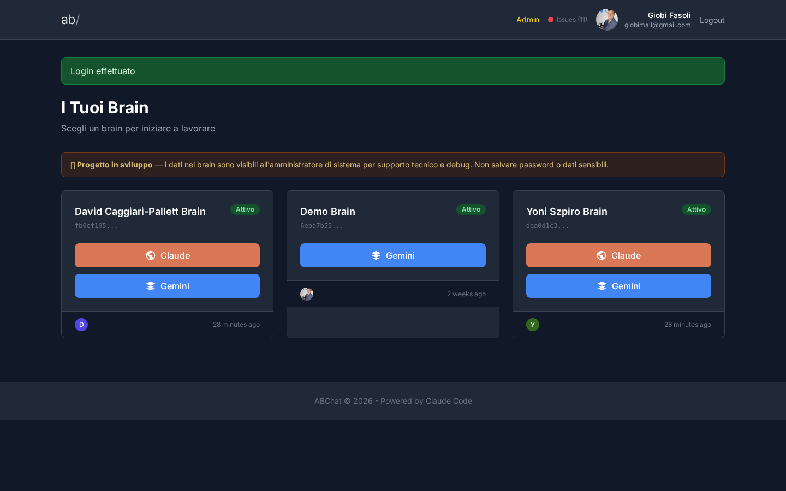
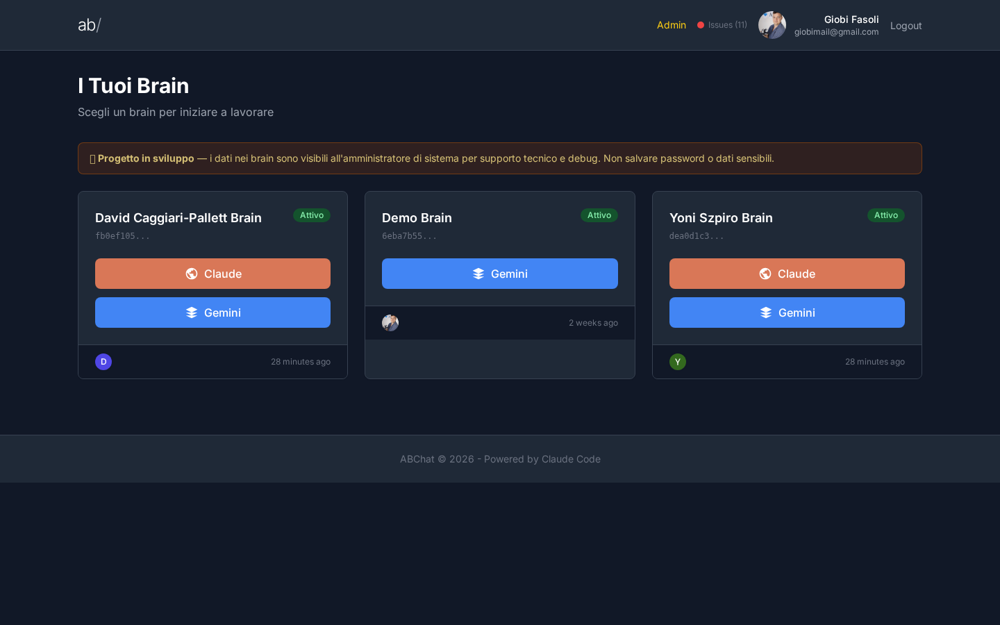
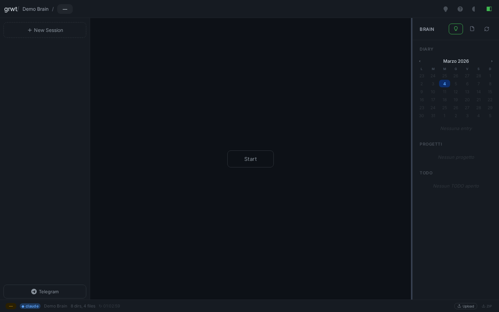
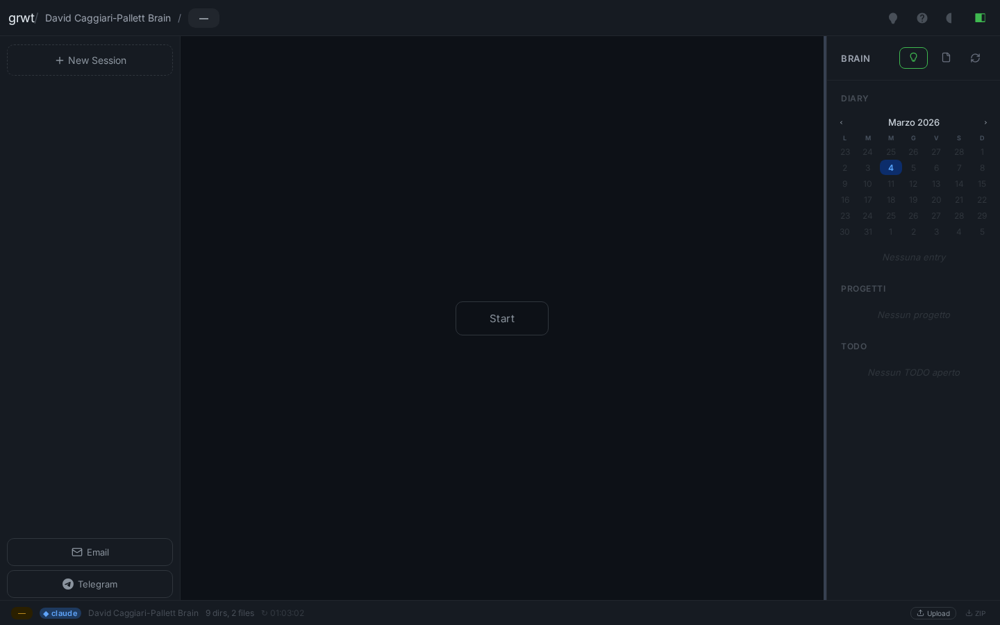
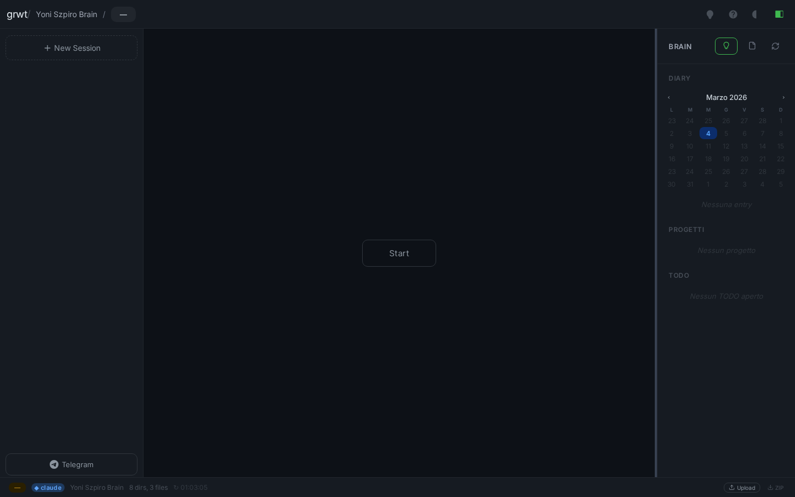

4 marzo 2026 abchat.grworktech.com (generations) Post-fix validation
90/100
Funziona, con una nota
Il database era stato cancellato dal comando di test (RefreshDatabase). I 3 brain (David, Demo, Yoni) sono stati ricreati e sono visibili nella dashboard. I terminali si aprono correttamente. Il boot loop e stato risolto. Resta da verificare manualmente la creazione di nuove sessioni dalla sidebar (non testabile in automatico perche richiede autenticazione WebSocket).
Login funzionante
Il link di accesso ha funzionato al primo tentativo. Dopo il click, si arriva direttamente alla pagina dei brain.

Redirect automatico alla dashboard dopo il login
Tutti e 3 i brain visibili
Dopo l'incidente, i brain di David, Demo e Yoni erano spariti dalla dashboard. Ora sono tutti visibili con stato "Attivo", con i pulsanti Claude e Gemini funzionanti.

Dashboard: David Caggiari-Pallett Brain, Demo Brain, Yoni Szpiro Brain — tutti attivi
Terminale Demo funzionante
Il terminale del brain Demo si apre correttamente. Claude e attivo (pallino verde in basso), la sidebar mostra il calendario e le sezioni Brain, Diary, Progetti, TODO.

Terminale Demo Brain — Claude attivo, interfaccia completa
Terminale David funzionante
Il brain di David si apre senza problemi. Il boot loop che bloccava la sessione e stato risolto. Il terminale mostra Claude attivo con Email e Telegram configurati.

Terminale David Caggiari-Pallett Brain — nessun boot loop
Terminale Yoni funzionante
Anche il brain di Yoni si apre correttamente. Claude e attivo, Telegram configurato, nessun errore visibile.

Terminale Yoni Szpiro Brain — operativo
Sessioni nella sidebar — da verificare manualmente
Il pulsante "Nuova Sessione" e presente nella sidebar, ma le sessioni esistenti non sono visibili nel test automatico. Questo e normale: le sessioni vengono caricate tramite una connessione sicura (WebSocket) che il test automatico non puo simulare. Va verificato manualmente aprendo il sito nel browser.
Sidebar con "+ New Session" visibile — sessioni caricate via WebSocket (non testabile in automatico)
Riepilogo incident
Campo
Valore
Server
generations (135.181.144.5)
Dominio
abchat.grworktech.com
Causa root
RefreshDatabase trait nei test PHPUnit ha cancellato il DB SQLite di produzione
Dati persi
Tabelle brains, brain_users, brain_sessions (utenti e magic_links sopravvissuti)
Scenario
Post-fix validation
Score
90/100
Fix applicati
1. Ricreati record brain in DB per David (fb0ef105), Yoni (dea0d1c3), Demo (6eba7b55)
2. Ricreati brain_users (owner link) per ogni brain
3. Ricreate 5 brain_sessions per le sessioni tmux attive
4. Rimosso RefreshDatabase da tutti i test (3 file)
5. TestCase base: safety check che ABORTA se DB non e :memory:
6. TestCase base: migrate automatico su :memory: per ogni test
7. Pre-commit hook: blocca RefreshDatabase, DatabaseMigrations, migrate:fresh/refresh
8. Creato brain-launcher.sh (mancante — causa root del boot loop)
9. Anti-loop guard in server.js (max 3 recreation in 30s)
10. Killati processi zombie Claude (~10 processi, ~2.5GB RAM)
11. Creato DatabaseSafetyTest smoke test (6 assertion)
12. Deploy su generations (git merge origin/main)
Causa root: RefreshDatabase
// PRIMA (distruttivo):
use Illuminate\Foundation\Testing\RefreshDatabase;
class BrainAccessTest extends TestCase {
use RefreshDatabase; // <-- CANCELLA E RICREA TUTTE LE TABELLE
// DOPO (sicuro):
// TestCase::setUp() fa:
// 1. Verifica che DB sia :memory: (altrimenti ABORT)
// 2. Esegue migrate su DB effimero
// Nessun trait distruttivo, nessun rischio per produzione
Protezioni aggiunte
1. TestCase safety: abort se database != :memory:
2. Pre-commit hook: blocca use RefreshDatabase nel codice
3. Pre-commit hook: blocca migrate:fresh e migrate:refresh
4. DatabaseSafetyTest: scansiona tutti i file test per RefreshDatabase
5. Anti-loop guard in server.js: blocca sessioni che crashano >3x in 30s
6. brain-launcher.sh: dispatcher per claude/gemini wrapper
Test suite
$ php artisan test
47 passed (116 assertions) — 14.28s
DatabaseSafetyTest:
database is memory sqlite .............. PASS
database driver is sqlite .............. PASS
every brain has an owner ............... PASS
brain user link is created correctly ... PASS
dashboard shows brain after creation ... PASS
no test file uses refresh database ..... PASS